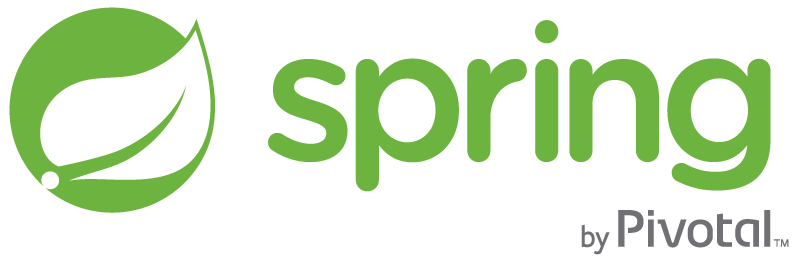
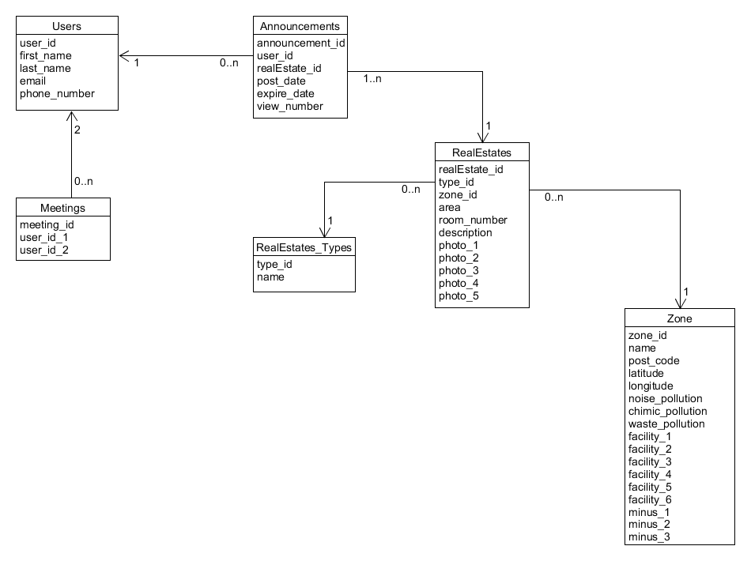

Imobiliare Cloud
Cuprins:
Descriere
E necesara o aplicatie Web menita a gestiona eficient tranzactiile imobiliare. Sistemul va permite managementul unor imobile spre vanzare si/sau inchiriere, inclusiv informatii precum descriere, pret, coordonatele locatiei, date de contact, facilitati oferite, riscuri posibile etc.
Workflow
- User flow
- Use case
Tehnologii Folosite
Este un framework de dezvoltare web cu sursă deschisă bazată pe limbajul TypeScript. Proiectul este dezvoltat de Echipa Angular de la Google și de o comunitate de utilizatori individuali și companii. Angular este o rescriere completă, de către aceeași echipă, a frameworkului AngularJS.

Bootstrap este un framework de front-end, open-source, dezvoltat de Twitter. Frameworkul contine templete-uri de HTML si CSS pentru fonturi, forme, butoane, meniuri si alte componente pentru interfanta. De asemenea dispune de o librarie speciala construita peste Angular ce ofera posibilitatea manipularii elementelor in stil java script.

Java este un limbaj de programare orientat-obiect, puternic tipizat, conceput de către James Gosling la Sun Microsystems (acum filială Oracle) la începutul anilor ʼ90, fiind lansat în 1995. Limbajul împrumută o mare parte din sintaxă de la C și C++, dar are un model al obiectelor mai simplu și prezintă mai puține facilități de nivel jos. Un program Java compilat poate fi rulat fără modificări pe orice platformă care e instalată o mașină virtuală Java (prescurtat JVM). Acest nivel de portabilitate (inexistent pentru limbaje mai vechi cum ar fi C) este posibil deoarece sursele Java sunt compilate într-un format standard numit cod de octeți (engleză byte-code) care este intermediar între codul mașină (dependent de tipul calculatorului) și codul sursă.
Spring Framework este o platformă cu sursă deschisă pentru simplificarea scrierii aplicațiilor în limbajul Java, dar există și o versiune pentru Platforma .NET. Deși este folosit în principal pentru platforma Java EE, Spring poate fi utilizat pe orice aplicație Java. Este văzut în comunitatea programatorilor ca o alternativă la modelul Enterpise JavaBeans (EJB).

JSON Web Token este un standard deschis bazat pe JSON pentru crearea token-uri de acces ce se transmit prin intermediul header-elor HTTP. De exemplu, un server ar putea genera un token și să îl furnizeze unui client. Clientul ar putea folosi acel token pentru a dovedi că este logat. Fiecare token este semnat de cheia privată a unei părți (de obicei serverul), astfel încât ambele părți pot verifica legitimitatea acestuia.

Object / Relational Mapping (ORM) este o tehnică de programare ce face posibilă accesarea și manipularea obiectelor fără ca programatorii să fie interesați de sursa de date de unde provin aceste obiecte. Această tehnică a apărut din nevoia de a depăși diferențele de paradigmă dintre modelul orientat pe obiecte (susținut de limbajele de programare de nivel înalt actuale) și modelul relațional (utilizat de cele mai populare sisteme de gestiune a bazelor de date).Este scris in Java si este destinat pentru rezolvarea problemelor de persistenta ale aplicatiilor J2SE si J2EE. In prezent este foarte des folosit dintre framework-urile ORM existente, in aplicatiile Java pentru web.
MySQL este un sistem de gestiune a bazelor de date relaționale, produs de compania suedeza MySQL AB și distribuit sub Licența Publică Generală GNU. Este cel mai popular SGBD open-source la ora actuală.. Deși este folosit foarte des împreună cu limbajul de programare PHP, cu MySQL se pot construi aplicații în orice limbaj major. Există multe scheme API disponibile pentru MySQL ce permit scrierea aplicațiilor în numeroase limbaje de programare pentru accesarea bazelor de date MySQL, cum ar fi: C, C++, C#, Java, Perl, PHP, Python, FreeBasic, etc., fiecare dintre acestea folosind un tip specific API. O interfață de tip ODBC denumită MyODBC permite altor limbaje de programare ce folosesc această interfață, să interacționeze cu bazele de date MySQL cum ar fi ASP sau Visual Basic.

H2 este o baza de date relațională scrisă în Java ce poate fi folosită embedded pentru a ușura perioada de dezvoltare.

Platforma Google Cloud (GCP), oferită de Google, este o suită de servicii de cloud computing care rulează pe aceeași infrastructură pe care Google o utilizează intern pentru produsele sale finale. Alături de un set de instrumente de management, acesta oferă o serie de servicii cloud modulare, inclusiv computere, stocare de date, analiză de date și învățare automată.

GitHub este un serviciu de gazduire web pentru proiecte de dezvoltare a software-ului care utilizeaza sistemul de control al versiunilor Git. GitHub ofera planuri tarifare pentru depozite private, si conturi gratuite pentru proiecte open source.

Structura Bazei de Date

Raport Tehnic
- Realizarea arhitecturii bazei de date
- Realizarea diagramei use-case
- Dezvoltare
- Testare
- Stabilizare
Realizarea arhitecturii bazei de date
- Crearea unei diagrame UML pentru a face legaturile dintre tabelele bazei de date.
Realizarea diagramei use-case
- Crearea unei diagrame UML pentru a descrie business logic-ul aplicatiei finale.
Dezvoltare
- Implementarea functionalitatilor dorite (backend + frontend).
Testare
- Testarea functionalitatilor implementate utilizand testarea manuala.
Stabilizare
- Fixarea bug-urilor descoperite in urma etapei de testare.
Etapele realizarii proiectului:
Business plan
Cod relevant - Zoom-in pentru a vedea mai bine :)